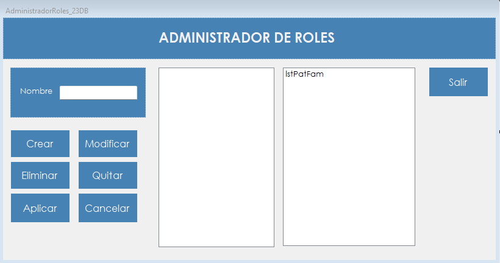

Permite crear, modificar y eliminar los roles del sistema, armados con patentes y familias de patentes.
El rol define qué puede hacer cada persona dentro de AeroManager. Cada usuario tiene un rol, y las patentes de ese rol determinan qué opciones aparecen en su menú principal.
Un rol se compone de patentes individuales, de familias que agrupan varias patentes, o de una combinación de ambas. Usar familias evita repetir la misma selección en cada rol: los permisos comunes se arman una vez y se reutilizan.
El menú de cada usuario se arma al iniciar sesión, por lo que los cambios en un rol se ven en el siguiente ingreso de quienes lo tienen asignado.
Desde el menú principal, en Administrador › Gestion de Perfiles › Administrador de Roles. La opción aparece si el rol del usuario incluye la patente correspondiente.

| Control | Para qué se usa |
|---|---|
| Nombre | Nombre del rol. |
| Lista del centro | Muestra en forma de árbol lo que contiene el rol que se está armando o modificando. |
| Lista de la derecha | Muestra los roles, las patentes y las familias existentes. Con doble clic, una patente o una familia pasa a la lista del centro. Con un clic en un rol, se habilitan Modificar y Eliminar. |
| Crear | Crea un rol con el nombre escrito y los elementos de la lista del centro. |
| Modificar | Carga el rol seleccionado para editarlo. |
| Eliminar | Elimina el rol seleccionado. |
| Quitar | Durante una modificación, saca del rol el elemento elegido en la lista del centro. |
| Aplicar | Guarda los cambios de la modificación en curso. |
| Cancelar | Descarta lo cargado y deja la pantalla como al abrirla. |
| Salir | Cierra la pantalla. |
| Situación | Qué significa y qué hacer |
|---|---|
| "Debe ingresar un nombre para el Rol." | El campo Nombre está vacío. |
| "Debe seleccionar al menos un elemento." | Un rol nuevo necesita al menos una patente o una familia. |
| "Ya existe un Rol con ese nombre." | Hay que elegir otro nombre. La comparación no distingue mayúsculas de minúsculas. |
| "Rol creado correctamente." | El rol ya se puede asignar en Gestión de usuarios. |
| "No se puede agregar un Rol dentro de otro Rol." | Solo se pueden agregar patentes y familias. |
| "La Familia contiene patentes que ya están incluidas." | Alguna patente de esa familia ya forma parte del rol. Hay que quitar el elemento repetido o elegir otra familia. |
| "La patente '" seguido del nombre de la patente, "' ya está incluida." | Esa patente ya forma parte del rol, sola o dentro de una familia. |
| "El elemento ya fue agregado." | Ese elemento ya figura en la lista del centro. |
| "Debe seleccionar un Rol." | Hay que hacer clic en un rol de la lista de la derecha. |
| "Solo se pueden eliminar Roles." | El elemento seleccionado es una patente o una familia. |
| "Solo se pueden modificar Roles." | El elemento seleccionado es una patente o una familia. |
| "No puede eliminar su propio Rol." | Es el rol de la sesión actual. Tiene que hacerlo otro usuario con otro rol. |
| "No puede modificar su propio Rol." | Es el rol de la sesión actual. Tiene que hacerlo otro usuario con otro rol. |
| "No se puede eliminar un Rol que está asignado a usuarios." | Primero hay que asignarles otro rol a esos usuarios en Gestión de usuarios. |
| "¿Está seguro que desea eliminar el Rol" seguido del nombre del rol | Con Sí el rol se elimina; con No no cambia nada. |
| "Rol eliminado correctamente." | El rol dejó de existir. |
| "Debe seleccionar un elemento." | Hay que elegir un elemento de la lista del centro antes de presionar Quitar. |
| "No se puede quitar un elemento de dentro de una Familia. Quite la Familia completa." | Las patentes de una familia no se quitan por separado desde un rol. Para cambiar su contenido se usa Administrador de familias. |
| "Rol modificado correctamente." | Los cambios quedaron guardados y se aplican en el siguiente ingreso de cada usuario. |
| "La operación se registró correctamente, pero no pudo asentarse en la Bitácora:" seguido del motivo | El cambio se guardó, pero el evento no quedó en la bitácora. Después de los dos puntos se muestra el motivo técnico. |